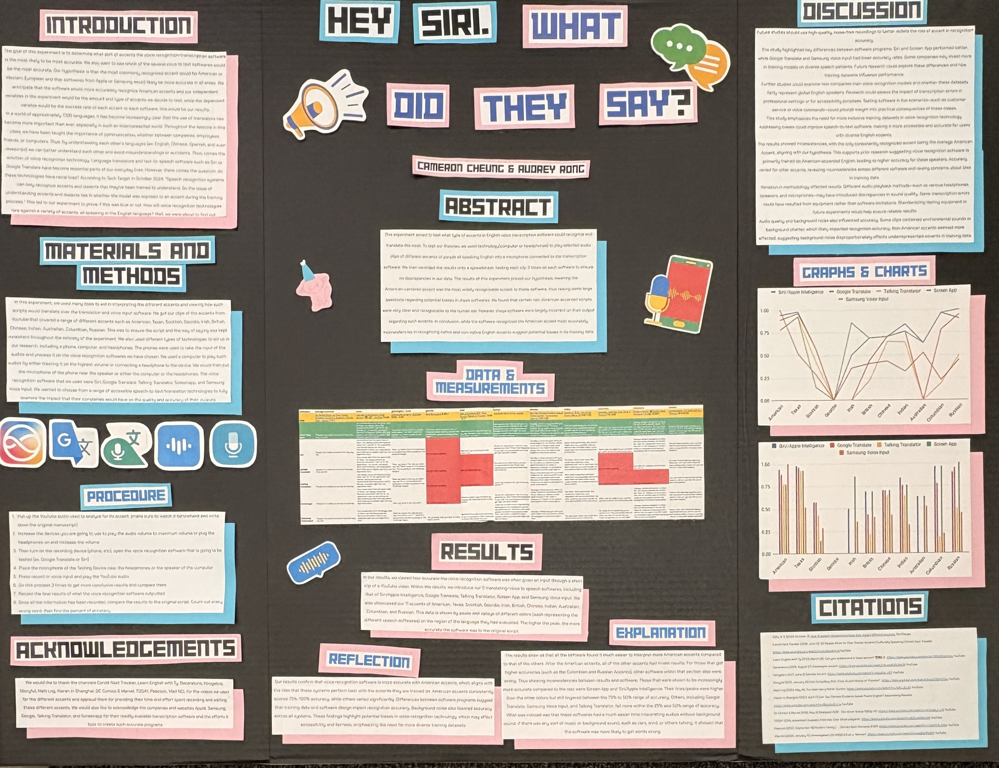

Created an app that allows the user to quickly access essential information about various Valorant Characters.
View DetailsThis lab aimed to test what accents Transcription Software could recognize the most. To test, we used headphones playing selected audio clips of different accents into a microphone connected to the transcription software. We then recorded the results onto a spreadsheet, testing each clip 3 times on each software to ensure no discrepancies in our data. The results of this experiment proved our hypothesis, meaning the American Accent was the most widely recognizable accent to these software, but some large questions were raised by our results. This was mainly because some accents that were not native to English speakers were very recognizable, and some native English accents were harder for the transcription to understand. In conclusion, while the software recognized the American accent most accurately, inconsistencies in recognizing native and non-native English accents suggest potential biases in its training data. Further research could determine how these biases affect speech recognition accuracy.
